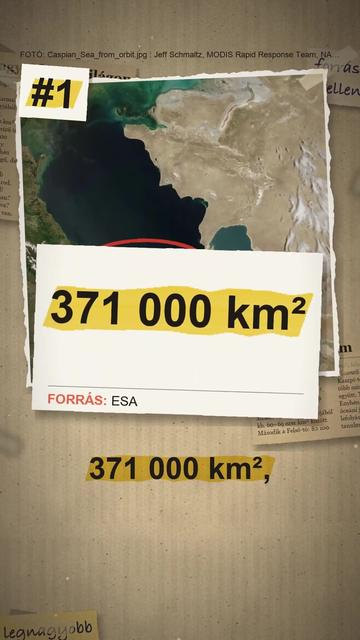

Megnézem a YouTube-onAz 5 legnagyobb tó a világon
Röviden: A világ öt legnagyobb tava a vízfelszín területe szerint. Kaszpi-tenger: 371 000 km².
A világ öt legnagyobb tava a vízfelszín területe szerint. Kaszpi-tenger: 371 000 km². A neve ellenére tó: nincs lefolyása, bár a vize enyhén sós, a medencéje pedig óceáni jellegű; egy 2020-as tudományos összefoglaló (Leroy és mtsai) a világ legnagyobb tavának nevezi. Felső-tó: 82 100 km², felszínre a világ legnagyobb édesvizű tava. Viktória-tó: a források szerint 59 947 és 68 800 km² között; a legkisebb érték is nagyobb a Huron-tóénál, de csak néhány száz km²-rel. Huron-tó: 59 600 km². Michigan-tó: 57 800 km². A Kaszpi-tenger nagyobb, mint a másik négy együtt (összesen legfeljebb 268 300 km²).
Az összes rész forrásokkal: https://valoban.pages.dev/
Források
- ESA: Earth from Space – South Caspian Sea
- Leroy és mtsai: The Caspian Sea (Springer, 2020)
- US EPA: Physical Features of the Great Lakes
- US EPA: Lake Huron
- NPS: Lake Superior (Pictured Rocks)
- FAO: Inland fishery resources of Africa – Lake Victoria
- IAGLR: Lake Victoria
- Guinness World Records: Largest tropical lake
8 forrás · Hogyan ellenőrzünk?
Hibát találtál? Írd meg nekünk, megnézzük.
Képek és kreditek
• a Kaszpi-tenger az űrből – Caspian_Sea_from_orbit.jpg : Jeff Schmaltz, MODIS Rapid Response Team, NASA/GSFC derivative work:, Public domain (https://creativecommons.org/publicdomain/mark/1.0/) https://commons.wikimedia.org/?curid=11365206
• a Kaszpi-tenger, NASA MODIS, 2017 – Jeff Schmaltz, MODIS Land Rapid Response Team, NASA GSFC, Public domain (https://creativecommons.org/publicdomain/mark/1.0/) https://commons.wikimedia.org/?curid=145419622
• a Felső-tó, NASA MODIS, 2019 – MODIS Land Rapid Response Team, NASA GSFC, Public domain (https://creativecommons.org/publicdomain/mark/1.0/) https://commons.wikimedia.org/?curid=145436020
• a Felső-tó a Terra műholdról – NASA/Terra-MODIS, Public domain (https://creativecommons.org/publicdomain/mark/1.0/) https://commons.wikimedia.org/?curid=117893110
• a Viktória-tó, NASA MODIS, 2024 – MODIS Land Rapid Response Team, NASA GSFC, Public domain (https://creativecommons.org/publicdomain/mark/1.0/) https://commons.wikimedia.org/?curid=146975910
• a Viktória-tó, NASA MODIS, 2019 – MODIS Land Rapid Response Team, NASA GSFC, Public domain (https://creativecommons.org/publicdomain/mark/1.0/) https://commons.wikimedia.org/?curid=145436452
• balra a Michigan-, jobbra a Huron-tó, MODIS, 2021 – MODIS Land Rapid Response Team, NASA GSFC, Public domain (https://creativecommons.org/publicdomain/mark/1.0/) https://commons.wikimedia.org/?curid=144736560
• a Huron-tó a NASA felvételén, 2011 – Jeff Schmaltz, Public domain (https://creativecommons.org/publicdomain/mark/1.0/) https://commons.wikimedia.org/?curid=57414140
A képek módosítva: 9:16-ra kivágva, átméretezve, kameramozgással, ráégetett felirattal.